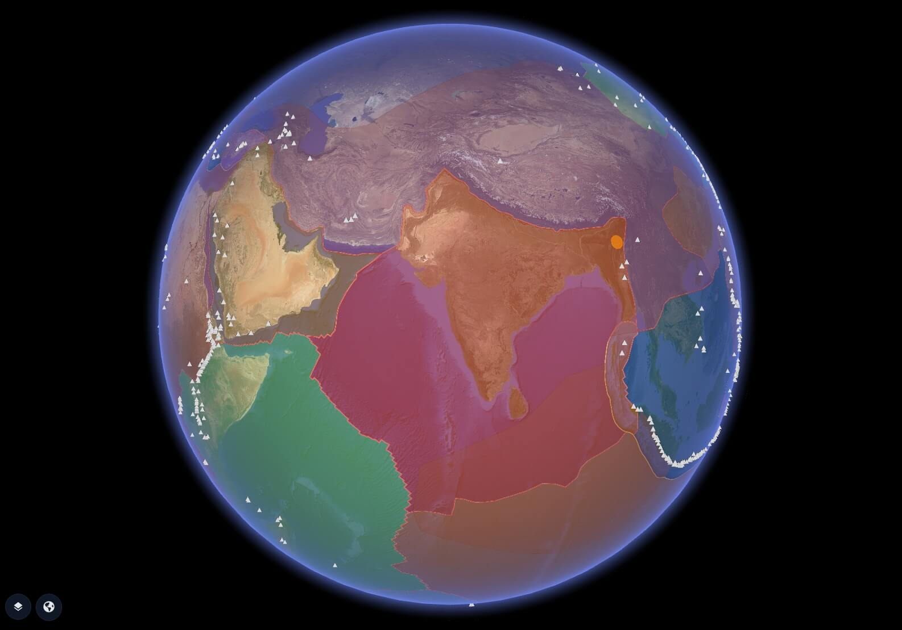

Plate Boundaries, Earthquakes & Volcanoes on the Globe
Five geoscience layers on one live 3D globe — tectonic plates, plate boundaries, orogens, real-time USGS earthquake alerts, and 1,500+ Smithsonian GVP volcanoes. Click any event for full detail.
GRIP 3D fuses five open geoscience datasets into a single interactive 3D globe: tectonic plate polygons colour-coded by plate identity, plate boundary lines classified by boundary type, orogenic belts showing mountain-building zones, a live USGS earthquake feed updated in real time with magnitude and depth, and the complete Smithsonian Global Volcanism Program database of 1,500+ Holocene volcanoes with name, country, subregion, elevation, and observatory data. Click any volcano to open its full profile panel — as seen in the demo with Long Valley Caldera, Mammoth Mountain, Mono-Inyo Chain, and more. Built for geoscientists, risk analysts, disaster preparedness teams, insurers, educators, and anyone who needs to understand where the Earth is most active.

Geoscience data is scattered across USGS portals, Smithsonian databases, academic GeoJSON repositories, and national seismic networks. Seeing tectonic context alongside live seismic activity requires stitching together five separate tools.
- Earthquake feeds, volcano databases, and plate boundary data live in separate systems
- No single view combines tectonic context with live seismic events
- Flat 2D maps distort plate relationships at global scale
- Risk analysts cannot see spatial overlap between plates, faults, and active volcanoes
GRIP 3D layers all five geoscience datasets onto one globe — tectonic context beneath, live seismic events on top — so the spatial relationship between plates, boundaries, orogens, earthquakes, and volcanoes is immediately visible.
- Five toggleable layers: Tectonic Plates · Plate Boundaries · Orogens · Earthquakes · Volcanoes
- Live USGS earthquake feed — real-time M0+ events, scaled and coloured by magnitude
- 1,500+ GVP volcanoes as clickable points with name, country, elevation, observatory
- Click any volcano to open detail panel — as shown in the demo screenshot
Why this works at global scale
The Five Layers
- Each tectonic plate rendered as a filled polygon draped on the 3D globe surface
- Colour-coded by plate identity — as visible in the demo screenshot over North America
- Click any plate region to see plate name, type, and area in the info panel
- Provides spatial context for why earthquakes and volcanoes cluster at boundaries
- Shows how continents sit on their underlying plates — Pacific, North American, Eurasian, African, and more
- All plate boundary lines classified by tectonic type — convergent, divergent, transform
- Subduction zones rendered with directional indicators showing which plate dips under
- Colour-coded boundary lines: orange boundary lines visible in demo over western North America
- The Ring of Fire subduction zone — Pacific coast of the Americas and Asia — rendered in full
- Mid-ocean ridges (divergent) visible across Atlantic and Pacific
- Convergent — plates colliding, forming mountains or subducting
- Divergent — plates separating, forming rifts and mid-ocean ridges
- Transform — plates sliding past each other, causing strike-slip faults
- Subduction Zone — oceanic plate diving beneath continental plate
- Collision Zone — continental-continental convergence (e.g. Himalayas)
- Orogenic belts — zones of intense rock deformation caused by plate collision
- Polygon overlay showing mountain-building regions: Rockies, Andes, Alps, Himalayas, Urals
- Visible as the green/teal polygon region in the demo screenshot over western USA/Canada
- Shows the geological history of where continents collided and folded the crust
- Correlates with earthquake depth patterns — deep seismicity common beneath orogens
- Cordilleran Orogen — western North America (Rockies, Sierra Nevada, Coast Ranges)
- Andean Orogen — western South America
- Alpine-Himalayan Belt — Europe through Asia (Alps, Caucasus, Zagros, Himalayas)
- Appalachian-Caledonian — eastern North America and northern Europe
- Trans-Saharan Belt — central Africa
- Every recorded earthquake plotted in real time as a geo-located dot on the globe
- Dot size scales with magnitude — M6+ events are immediately visible at global zoom
- Dot colour encodes depth: shallow (red) → intermediate (orange/yellow) → deep (green)
- Click any event: magnitude, place, time, depth, alert level, tsunami flag
- Filter by time window: past hour, past day, past 7 days, past 30 days
- Filter by minimum magnitude: M1+, M2.5+, M4.5+, M5+, significant events
- M0–2 · Micro — rarely felt, detected by seismographs only
- M2–4 · Minor — often felt, rarely causes damage
- M4–5 · Light — noticeable shaking, minor damage possible
- M5–6 · Moderate — significant damage in populated areas
- M6–7 · Strong — destructive in populated regions
- M7+ · Major / Great — severe to catastrophic damage
- Every Holocene volcano (active in last 12,000 years) plotted as a triangle icon on the globe
- Triangle size and colour reflects activity status — as shown in demo for California/Nevada
- Click any volcano to open profile panel: Name, Country, Subregion, Elevation (M), Observatory
- Multi-select supported — demo shows 9/10 selected in the California cluster
- Smithsonian / USGS Daily Volcanic Activity Report integrated for currently erupting volcanoes
- 40–50 volcanoes in continuous eruption at any given time globally — all visible on the globe
- Name — Official GVP volcano name (e.g. Long Valley Caldera)
- Country — Nation where volcano is located (e.g. United States)
- Subregion — State/province (e.g. California)
- Elevation (M) — Summit elevation in metres (e.g. 2,600 m)
- Observatory — Monitoring agency (e.g. CALVO, HVO, AVO)
- Volcano Type — Caldera, Shield, Stratovolcano, Cinder Cone, etc.
Volcano Profile Examples
A sample of the California volcanic cluster shown in the demo — click any triangle on the globe to open these panels.
Capabilities
- Five geoscience layers independently toggleable on a single 3D globe
- Live USGS earthquake feed — real-time GeoJSON, continuous updates, global M0+ coverage
- 1,500+ Smithsonian GVP volcanoes with full profile on click: name, country, elevation, observatory
- Multi-select on volcano layer — select and compare up to 10 volcanoes simultaneously
- Earthquake filter by time window (hour / day / week / month) and minimum magnitude
- Tectonic plate polygons with plate boundary classification (convergent / divergent / transform)
- Orogenic belt polygons showing mountain-building zones correlated with seismicity
- APIs for custom seismic sensor data ingestion alongside USGS public feed
Data & API Stack
UC08 is powered by three authoritative open geoscience datasets — USGS for live earthquakes, Smithsonian GVP for volcanoes, and PB2002 for tectonic plate geometry.
https://earthquake.usgs.gov/fdsnws/event/1
| Endpoint | Used for | Returns |
|---|---|---|
/feeds/v1.0/summary/all_day.geojson |
Default earthquake layer (past 24h) | All M0+ earthquakes: mag, place, time, depth, coordinates |
/feeds/v1.0/summary/significant_month.geojson |
Significant events layer (past 30 days) | High-impact events with alert level, tsunami flag, felt reports |
/query?format=geojson&minmagnitude=4.5&limit=500 |
M4.5+ filter layer | Filtered earthquake set with full event properties |
/query?format=geojson&eventid={id} |
Single event detail on click | Full event: mag, depth, coordinates, felt reports, CDI, MMI, alert colour |
/query?format=geojson&starttime=&endtime=&minmagnitude= |
Custom time + magnitude filter | GeoJSON FeatureCollection of matching events with all properties |
volcano.si.edu · CC BY 4.0
| Field | Used for | Detail |
|---|---|---|
Volcano Name |
Label and panel title on click | Official GVP name for all 1,500+ Holocene volcanoes (e.g. Long Valley Caldera) |
Latitude / Longitude |
Triangle icon placement on globe | Geo-coordinates for all volcanoes — drives spatial placement on 3D surface |
Country / Subregion |
Profile panel: Country + State/Region fields | Nation and sub-national region (e.g. United States / California) |
Elevation (m) |
Profile panel: Elevation (M) field | Summit elevation in metres — as shown in demo (e.g. 2,600 m for Long Valley) |
Primary Volcano Type |
Icon shape variation on globe | Caldera, Shield, Stratovolcano, Cinder Cone, Submarine, etc. |
Volcano Observatory |
Profile panel: Observatory field | Monitoring agency code (e.g. CALVO, HVO, AVO, YVO) — as shown in demo |
Last Known Eruption |
Activity status badge on card | Year of last confirmed eruption — used to classify Active / Holocene / Historical |
Open / Public Domain
| Dataset | Used for | Detail |
|---|---|---|
Tectonic Plate Polygons |
Layer 1 — plate fill on globe | 14 major + minor plate polygons, colour-coded by identity, draped on 3D globe surface |
Plate Boundary Lines |
Layer 2 — boundary lines on globe | All boundary segments classified: convergent, divergent, transform, subduction, ridge |
Orogen Polygons |
Layer 3 — orogenic belts on globe | Mountain-building zone polygons — Cordilleran, Andean, Alpine-Himalayan, Appalachian, etc. |
Who Uses This
- Insurance & Reinsurance — Overlay tectonic plates and earthquake frequency onto asset portfolios; model seismic risk exposure by region for underwriting and cat modelling
- Infrastructure & Engineering — Identify proximity of critical infrastructure to plate boundaries, subduction zones, and active volcanic systems before build decisions
- Government & Emergency Services — Real-time earthquake alerts on a globe — coordinate preparedness across multiple hazard zones simultaneously
- Mining & Resources — Correlate orogenic belts with mineral deposit locations; understand structural geology at global scale
- Geoscientists & Researchers — Five open datasets on one spatial canvas — a reference layer for tectonic, seismic, and volcanic research workflows
- Education & Outreach — Show students exactly where the Ring of Fire is, why Japan has earthquakes, and what a caldera looks like — all in one interactive globe
- Media & Journalism — Visualise earthquake and volcanic events in context the moment they happen — spatial storytelling in seconds
- NGOs & Humanitarian — Pre-position disaster response based on where high-population zones overlap with active tectonic and volcanic hazard layers
Platform Views


Open for consulting and partner integrations
If you want this use case mapped to your data sources, we can deliver a fast prototype and integration plan — including layers, APIs, and deployment options.